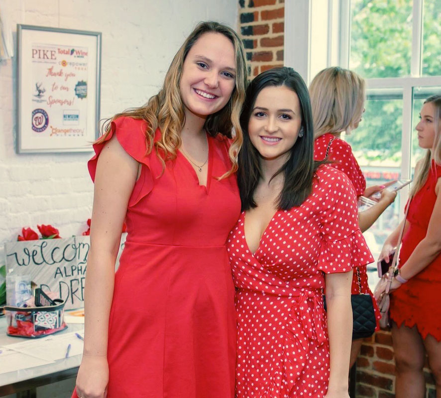

Welcome to the Iota Iota Chapter of Alpha Phi at George Washington University. Thank you for visiting our page!
My name is Anita Clifford, and I am currently a sophomore at GW. Located in the beautiful city of Washington
D.C., the Iota Iota chapter is consisted of around 150 strong-willed, intelligent, and diverse women that
create change both in and outside of our chapter. I was inspired to run for Chapter President by all the
amazing women in our chapter. On bid day, I gained more than a sorority. I gained friendships that would
last a lifetime, and a home away from home. My college experience was changed the day I accepted my bid,
as I am now surrounded by sisters that push me to be better version of myself.
The women of Iota Iota are extremely involved in philanthropy and organizations, both through our national
philanthropy and outside organizations. We take pride in the Alpha Phi Foundation and love planning events
such as the Red Dress Gala, and Heart Week to raise awareness and money for women’s heart health. Our women
are also involved in many other student organizations such as GW Women In Business, One Tent Health,
GlobeMed, GW Fashion Business Association, Model UN and GW TV. Our sisters also work hard outside of
academics, and intern at places such as their home country embassies, the White House, the United States
Capital, law firms and NBC Universal. The women of this chapter are the foundation to our success and all
we achieve here at GW!
Walking into our Alpha Phi townhouse everyday and seeing all of my best friends makes my day! I have
created friendships and memories that will last a lifetime. Here at Alpha Phi, I have extensively
given back to the GW and DC community, excelled in academics and now can proudly say I have became a
leader in the Greek community, and couldn’t have done it without my sisters. I know that my sisters,
the house, and the bonds that I have formed will be with me through thick and thin for the next couple
years of college. I am so humbled to lead a fantastic group of women at Iota Iota and will uphold the
values our founders created in 1872. Please feel free to reach out to me with any questions!
AOE, Anita Clifford Chapter President of Iota Iota Alpha Phi gwualphaphipresident@gmail.com
About us
The Iota Iota chapter of Alpha Phi was colonized in 2002 at the George
Washington University in the beautiful city of Washington D.C. We are
consisted of women from different countries around the world, diverse
passions and interests, and wanting to make a difference on our campus
and in the D.C community. You will find the most empowered, empathetic,
passionate, amiable women in our chapter. We support one another like
all sisters should. Our dedication to raising money for our philanthropy
the Alpha Phi Foundation brings our sisters even closer together.
Today, with over 190 chapters and 200,00 members, Alpha Phi continues
to provide a “tie which unites a circle of friends” for women young and
old all around the world. From hand to hand and heart to heart, we are
all grateful and proud of the legacy left to us by our Founders.
Alpha Phi is sisterhood of outstanding women supporting one another
in lifelong achievement. We accomplish this mission through the
cultivation of three ideals that Alpha Phis hold above all else:
Sisterhood, Scholarship and Service.
Sisterhood
Alpha Phis develop life-long friendships based on mutual support
and unconditional love. We invite you to enjoy the benefits of a
sincere sisterhood throughout college and in every stage of your life.
Scholarship
Intellectual curiosity and academic excellence is highly valued in
Alpha Phi. As a collegiate member, you will find that Alpha Phi
will give you the support and tools you need to not only succeed,
but excel in your academic endeavors. "We seek the highest ideal
of womanhood, and we try to gain this ideal by cultivating...the
power and passion for seeking intellectual development."
Service
The commitment of our founders to foster a "spirit of love and charity"
has stood the test of time and remains as important to Alpha Phi
today as it was in 1872. Practicing generosity and seeking to
improve the lives of women are basic tenants of our Fraternity.
Service
One of the most important and honorable aspects to being a member of
Alpha Phi is having the opportunity to give back to the community. We as
sisters, are motivated to create change around the world, and we do
this by involving ourselves in philanthropic efforts close to our hearts.
National Philanthropy
What makes Alpha Phi International Fraternity unique is we have our own
philanthropic organization, named the Alpha Phi Foundation. In 1956,
Alpha Phi was one of the first women’s fraternities to establish a
Foundation as a trust to award grants specifically for scholarship and
women’s heart health. We hold an annual Red Dress Gala with our sisters,
family, alumnae and friends to help raise money and awareness for
women’s heart health. This past year during Iota Iota’s 12th Annual Red
Dress Gala, we raised over a total of $13,500 to help fund research and
treatment for women’s heart health.

Chapter Philanthropy
We like to think of fun and creative ways our GW Community can get involved in helping
us raise money for the Alpha Phi Foundation. Every fall semester we hold Alpha Phifa where
fraternities, sports teams, and different organizations at GW play against each other in a
soccer competition to see who can win the title of Alpha Phifa Champions. Ever Spring
semester we put on Heart Week, which every day we have a different event to help raise
money for the Alpha Phi Foundation. For an entire week, the GW community participates in
events with the sisters of Alpha Phi including, Mac & Phis, Queen of Hearts, and Eat Your
Hearts Out. We look forward to this week every year!
External Philanthropy
As much as we take pride in our own philanthropic efforts, we appreciate other organizations that are
trying to do some good in the world! For the first time ever, we participated in the ALS walk held in
Washington D.C and raised $5,721 for Team Alpha Phi. We also have volunteered with N Street Village,
GWDM, and the Honey W. Nashmen Center. To give back all the support we receive from GW Greek Organizations,
we love to participate in the rest of our fellow chapters philanthropic events.
Sisterhood
Our love for one another is what binds this sisterhood together. Alpha Phi’s motto, “union hand in hand,”
perfectly describes the strong bonds formed in Alpha Phi at GW. To be a member of Iota Iota is to be apart
of a friendship that lasts years beyond your college experience. Sisterhood is not only about supporting each other,
but holding one another up to a higher standard to inspire each sister be the best version of themselves! Here at
Iota Iota, we take pride in how each member cheers on each other through every endeavor in life, and you will never
feel alone here.
Big Sister/Little Sister
One of the best parts about joining Alpha Phi is gaining a new big sister! Each new member receives a big sister
during their first semester who will serve as your role model and best friend. Big sisters help guide the younger
women throughout their Alpha Phi journey here at Iota Iota, whether it is giving great advice, going out to dinner
together, helping with academics, and anything else! Those Big Sisters will be there for you no matter what! During
the new member’s second year, they will also receive a little! Since this tradition has continued since the colonization
of Iota Iota, there are long family lineages and all of those women are there to guide you too!
Sisterhood Events
Sisterhood events create the best memories for the women of Iota Iota! Our bigger events involve sisterhood retreat,
crush parties, formal and semi-formal dances! Our smaller events include pizza night, study hours, dinner hours in
the Alpha Phi Townhouse, and mixers between each pledge classes.
We get our sweat on at sisterhood workout classes
at CorePower Yoga, SoulCycle, Orange Theory and Blast! Different clothing companies like Wylie Grey hold trunk shows
for the whole chapter. At the end of the school year, we hold Senior Sendoff, a week full of fun filled events to
give our seniors the best last hoorah. These events strengthen our sisterhood, as we bond over our similar interests
and hobbies!
00px;">
Scholarship
First and foremost we are students here at GW, and our first priority is always academics.
The sisters of Iota Iota support one another in this academically rigorous environment of college.
Our Director of Academic works with members to help them succeed in every aspect of school.
Her role is to enhance the academic success of Iota Iota!
The Alpha Phi Townhouse
We are fortunate enough to have a townhouse located on campus where the members of Iota Iota can gather
to study, do homework, cook a study snack, and utilize resources to help them succeed in school.